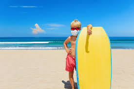
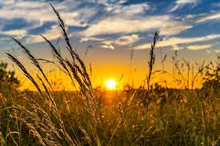
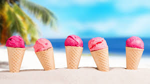
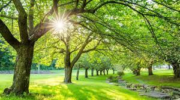

Sommer 2021
5 seconds of summer
Her er det bildet av 5 Second of Summer. 5 Second Of Summer. er et pop-rock boy band fra Australia.
Kule gutten
Her ser dere bildet av lillebroren min, med et surfebrett. Dette er bildet av stranden i Wellfleet, Massachusetts
Stranden

Stranden i Wellfleet, var et av de fineste standene jeg har besøkt. havet var blått og det var veldig fint her de dagene vi var på besøk.
Kornåker
Bildet av kornåker, denne åkeren ligger i Nord Amerika og er et av stedene vi besøkte på vår reise i USA.
Is
Det ble spist mye av Is i sommer, derfor passer det perfekt å ha det med.
Skogen
Det her er bildet av en skog i Norge.